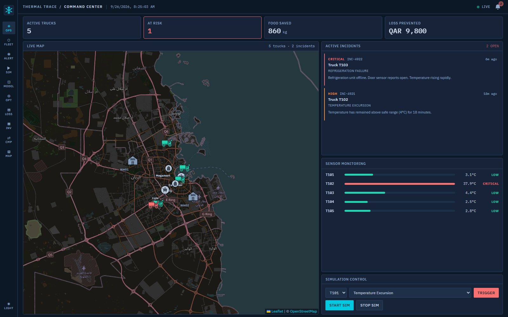

Cold-chain intelligence: physical risk and commercial value, in one reserve.
of food is lost between harvest and retail.
more is wasted after it reaches retail and homes.
of global greenhouse-gas emissions come from food loss and waste.
Imports by sea and land, customs holds and border queues, across a summer that passes 45 °C. A fridge that fails at noon can spoil a load in hours.
TASMU analytics and Qatar's Food Security Strategy target efficient supply chains and less food waste. Thermal Trace works on the loss in transit.
Health creates the possibility of selling. Demand creates the possibility of realising value. Commercial Reserve lives where the two meet.
The time left to act before the good options disappear.
The economic runway: value that can still be realised.
The physical budget left before quality is compromised.
A continuous, timestamped memory of temperature exposure and stress.
The demo node reads one point. Ceiling and floor probes are the next step, so a warm layer shows up instead of hiding in an average.
Rising humidity shows whether an open door is wetting the cartons.
Bruising from a dropped pallet is damage a thermometer never sees.
Ethylene is the fruit itself reporting that it has started to ripen.
Finds internal bruising before anything is visible from outside.
Colour shift, mould, and a count of what is actually on the shelf.
Temperature and humidity flow from a real sensor node today (DHT11, about ±2 °C); shock is simulated and the rest are the designed next layer. All publish the same message, so adding one changes nothing downstream.
DS18B20 · ±0.5 °CSensirion SHT3x · ±2 % RH3-axis MEMS accel.Metal-oxide · VOC, C₂H₄NIR · 700–2500 nmRGB camera · edge visionCalculatedDeterministic Python. No AI model touches these numbers.
Answers typed questions in one pass. Never generates text; corroborates the decision, never overrides it.
Explains the calculated facts in plain words. May rank only feasible options; never invents a temperature, ETA or cost.
The trace follows the value from farm to ledger, not just from dock to dock.
On the truck, burning fuel and thermal life. Routing turns at-risk stock back into sales.
Thermal + Decision ReserveOn the shelf, burning shelf life while it waits for customers.
Commercial ReserveInto the customer's cart: the moment value is realised.
Value realisedPOS data flows back, profit hits the ledger, and demand triggers replenishment.
Value LedgerFor 3PLs, fleets and warehouses. Sold as a platform fine-tuned to each customer: sensors, calibration and integration.
For hypermarkets and HORECA. Sold as SaaS: joins the physical state with POS, ERP and WMS to route stock, and price it to clear.

1 2 3 4 5| Dimension | Legacy supply chain | Thermal Trace |
|---|---|---|
| The goal | Delay spoilage (defensive) | Maximise yield (offensive) |
| Asset view | A degrading physical object | An asset with a live, priced value |
| Inventory rule | FEFO: first expired, first out, by printed date | LCRFO (planned): lowest Commercial Reserve, first out, by live physics |
| Intervention | Passive temperature alarms | Optimized routing today; early markdowns planned |
| Waste | An invisible operating tax | A quantified, bounded value at risk |
Legacy model: inventory is a degrading liability, managed by a static printed expiry date.
Thermal Trace model: inventory is an asset with a live value, priced from its real thermal history and live demand.
Configured to the customer's equipment, sensors and products. The deployment is customised; the platform stays reusable.
Precise calculations over the retailer's own POS, inventory and ERP data. The repeatable SaaS product.
| Role | Owns | Monthly (QAR) | Annual (QAR) |
|---|---|---|---|
| CTO · Systems & Product Architect | Architecture, scope, data contracts, security, delivery | 20,000 | 240,000 |
| Thermal Intelligence · Data Engineer | Thermal state, exposure, risk models, shelf-life logic | 16,000 | 192,000 |
| Backend & Data Platform Engineer | Ingestion, databases, APIs, identity, integrations | 15,000 | 180,000 |
| IoT & Edge Engineer | Sensors, gateways, connectivity, calibration | 13,000 | 156,000 |
| Application & Workflow Engineer | Operator UI, alerts, approvals, ERP and WMS workflows | 12,000 | 144,000 |
| Total gross compensation | 76,000 | 912,000 | |
| Employment-cost provision | ≈ 109,000 | ||
| Total team budget | ≈ 1,020,000 |
The CEO leads investors, anchor customers and sales. Food-safety experts are hired fractionally, from the validation line.
| Hardware & platform | 435,000 | |
| Sensors and edge equipment | Sensors and gateways for 3–5 facilities: cold rooms, reefer trucks, dispatch areas | 155,000 |
| Deployment, calibration, field testing | Install, calibrate, and test outages and alerts on site | 95,000 |
| Cloud, data infrastructure, security | 12 months of hosting, storage and security for asset history | 100,000 |
| Enterprise integration, data engineering | A few high-value flows into product, shipment, ERP and WMS records | 85,000 |
| Validation & go-to-market | 200,000 | |
| Thermal and food-domain validation | Fractional food-safety experts review thresholds and shelf-life models | 65,000 |
| Customer development and success | The anchor pilot: site survey, value baseline, conversion | 70,000 |
| Legal, IP, commercial readiness | Data-access agreements, pilot and annual contracts, IP | 65,000 |
| Contingency reserve released only with documented founder and investor approval | 195,000 | |
Secure the pilot, agree how value is measured, install the devices.
Run the intervention workflow and prove the avoided loss against the baseline.
Convert to an annual contract and win a second customer.
| Risk | Mitigation |
|---|---|
| Customer data access | Sign data access and a named sponsor first |
| False precision | Validated assumptions, uncertainty shown, domain review |
| Integration complexity | A few high-value data flows, clear contracts |
| Long sales cycle | Named decision-makers, success criteria, conversion terms |
| Building both divisions too early | Thermal Reserve first, Commercial Reserve staged |
QAR 195,000 held back. Spent only with documented approval from founders and investors.
Any asset that deteriorates, cures or loses viability under the stress of time needs this architecture.
Physics stability budgets
Calculates active-cooling intercepts on the tarmac
Physics grid signals, inverter telemetry
Calculates grid flexibility reserve
Physics propellant bleed, thermal cycling
Calculates mission reserve for manoeuvres
Physics munition shock and degradation
Calculates operational readiness reserve
Generative Gains is raising QAR 1.85M to prove Thermal Trace in the field: that what a failing fridge costs can be measured, and recovered.